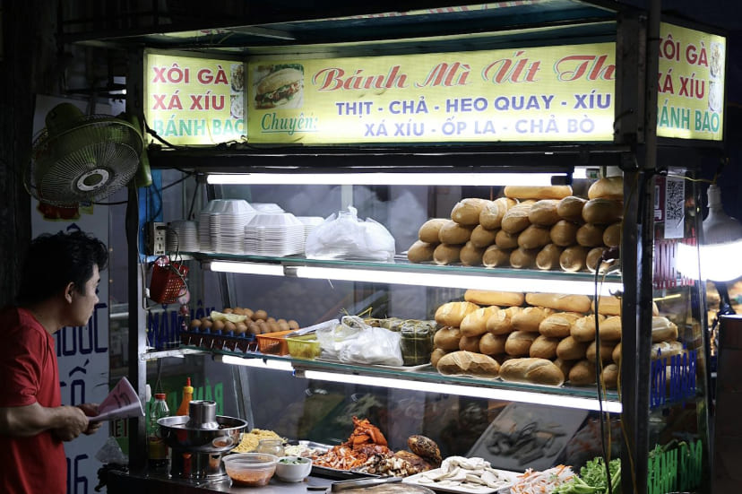

Think Hoi An is just sleepy temples and tailor shops? Think again! Once the sun sets, this UNESCO World Heritage town transforms into a magical nightlife playground. Whether you're seeking riverside cocktails under glowing lanterns, beach parties with fellow backpackers, or discovering where locals actually party, this guide reveals the best of Hoi An after dark.
📋 What's Inside This Guide
🏮 Ancient Town Nightlife: Lantern-Lit Magic
The Ancient Town transforms after sunset into one of Southeast Asia's most atmospheric nightlife zones. The car-free streets glow with thousands of silk lanterns, creating an Instagram-worthy backdrop for your evening adventures.
Best Riverside Bars (Thu Bon River)
🍹 Dive Bar (Most Popular Backpacker Hub)
📍 88 Nguyen Thai Hoc Street
💰 Beers: 25,000-35,000 VND ($1-1.50) | Cocktails: 60,000-90,000 VND ($2.50-4)
🕐 5pm-1am daily
This is backpacker central. Located right on the riverfront, Dive Bar has been the social meeting point for budget travelers for years. The upstairs bamboo lounge offers river views, cheap drinks, and a guaranteed crowd every night. Happy hour (5-8pm) features beer pong tournaments and 2-for-1 cocktails. Come here to make friends, swap travel stories, and find people to explore with.
🌅 The Espresso Station (Sunset Cocktails)
📍 125 Tran Phu Street
💰 Coffee: 35,000 VND ($1.50) | Cocktails: 80,000-120,000 VND ($3.50-5)
🕐 7am-11pm daily
By day it's a quiet coffee shop, but from 5pm onwards it morphs into a trendy riverside cocktail bar. Their rooftop terrace offers unbeatable sunset views over the Ancient Town. Order their signature "Hoi An Sunset" cocktail (passionfruit, vodka, and local honey) and watch the lanterns light up at dusk.
🎵 Before & Now (Live Music Lounge)
📍 51 Le Loi Street
💰 Beers: 30,000 VND ($1.30) | Entry: Free
🕐 6pm-midnight, live music starts 7:30pm
This sophisticated lounge features live acoustic performances every night from 7:30pm. The playlist mixes Western classics with Vietnamese folk songs. Arrive early (before 7pm) to grab one of the riverside window seats. Their mojitos are legendary among locals.
Night Market Bar Hopping Route 🚶
Want to experience multiple spots in one night? Follow this optimized crawl route:
6:00pm - Start at The Espresso Station for sunset cocktails
7:30pm - Walk to Night Market (browse stalls, grab bánh mì)
8:30pm - Dive Bar for beer pong & backpacker meetups
10:00pm - Before & Now for live music
11:30pm - Late-night cao lầu at market food stalls
🏖️ An Bang Beach: Where the Party Never Stops
Just 4km from Ancient Town, An Bang Beach is Hoi An's party headquarters. The 3km stretch of golden sand is lined with bamboo beach bars, each competing to throw the best parties. This is where you'll meet most of the backpacker crowd after 8pm.
Top Beach Clubs & Bars
🎉 Soul Kitchen (Biggest Beach Party)
📍 An Bang Beach Road (look for fire dancers)
💰 Beers: 20,000-30,000 VND ($0.85-1.30) | Cocktails: 60,000 VND ($2.50)
🕐 10am-2am daily, parties start 9pm
This is THE beach party destination. Every night from 9pm they host fire dancing shows, live DJs, and beach bonfires. Wednesday night is "Full Moon Party" (even when there's no full moon). Friday features beach BBQ with unlimited drinks packages (300,000 VND / $13 for 4 hours). The vibe is pure backpacker chaos in the best way - expect to make 20 new friends in one night.
🌊 The Deck House (Chill Beach Vibes)
📍 An Bang Beach (northern end)
💰 Beers: 25,000 VND ($1) | Food: 60,000-150,000 VND ($2.50-6)
🕐 8am-11pm daily
For a more relaxed scene, The Deck House offers bean bags on the sand, chilled house music, and some of the best burgers in Vietnam. Their sunset happy hour (5-7pm) is perfect for pre-gaming before Soul Kitchen. Stay for their beach BBQ nights (Tuesday and Saturday).
🍹 Rosie's Beach Bar (Budget-Friendly)
📍 An Bang Beach Road
💰 Beers: 15,000 VND ($0.65!) | Cocktail buckets: 150,000 VND ($6.50)
🕐 11am-midnight
This is hands-down the cheapest spot on An Bang Beach. Their famous "Beach Bucket" cocktails are strong enough to knock out a elephant and cost less than two beers back home. Monday night quiz (8pm) attracts huge crowds - winning team drinks free all night.
Getting to An Bang Beach at Night
🛵 Motorbike: Rent for 100,000-150,000 VND/day ($4-6). 10-minute ride from Ancient Town. Park at any beach bar for free.
🚕 Grab: 50,000-70,000 VND ($2-3) one way. Always available until midnight.
🚲 Bicycle: Free if your hostel provides bikes. 20-minute ride, but challenging after drinks!
💡 Pro Tip: Many beach bars offer free shuttle services. Ask at Dive Bar or your hostel - they usually leave around 8pm and return around 1am.
💰 Budget Backpacker Bars (Beers Under $2)
Traveling on a shoestring? These spots prove you don't need deep pockets to have an incredible night out in Hoi An.
🍺 Bia Hơi Corner (Local Beer Culture)
📍 Corner of Hai Ba Trung & Phan Chu Trinh
💰 Fresh beer: 5,000 VND per glass ($0.20!)
🕐 4pm-11pm daily
Welcome to where locals actually drink. Bia hơi is fresh draft beer brewed daily with low alcohol content (around 3%). Sit on tiny plastic stools, order by pointing at your glass when it's empty, and watch Hoi An life unfold. The atmosphere here is authentic Vietnam - expect karaoke, cigarette smoke, and incredible people-watching. Most backpackers stumble upon this corner by accident and end up staying for hours.
🏡 Mango Mango (Hostel Bar Done Right)
📍 232 Cua Dai Street
💰 Beers: 20,000 VND ($0.85) | Cocktails: 50,000 VND ($2)
🕐 5pm-midnight, events 8pm onwards
Even if you're not staying here, Mango Mango's rooftop bar welcomes everyone. They organize nightly events: Monday movie night, Tuesday pub quiz, Wednesday beer pong tournament, and Friday BBQ party. The crowd is 90% backpackers aged 20-30, making it effortless to meet travel buddies.
🌙 Moonlight Bar (Hidden Local Spot)
📍 15/5 Hai Ba Trung (in an alley - look for fairy lights)
💰 Beers: 18,000 VND ($0.75) | Vietnamese snacks: 20,000-40,000 VND
🕐 6pm-1am daily
This hidden gem feels like drinking in someone's garden - because it basically is. The owner, Ms. Linh, converted her courtyard into the coziest bar in town. String lights, potted plants, and homemade Vietnamese snacks create an intimate atmosphere. Ms. Linh knows everyone's name by the second visit and makes the best lemongrass cocktails you've never heard of.
🌆 Rooftop Bars & Sunset Spots
For elevated views (literally and figuratively), hit these rooftop venues that showcase Hoi An from above.
☁️ Sky Bar at Lantana Riverside Hotel
📍 55 Ba Trieu Street
💰 Cocktails: 120,000-180,000 VND ($5-7.50) | Beer: 50,000 VND ($2)
🕐 4pm-11pm daily
The fanciest spot on this list, but worth splurging for sunset. The 360-degree views encompass the Ancient Town, rivers, and distant mountains. Arrive at 5:30pm for prime seating and watch the entire town light up at dusk. Their "Hoi An Mist" gin cocktail is Instagram-famous for a reason.
🌅 Hoi An Roastery (Coffee by Day, Cocktails by Night)
📍 135 Tran Phu Street
💰 Coffee: 40,000 VND ($1.70) | Evening cocktails: 80,000 VND ($3.50)
🕐 7am-10pm daily
This boutique coffee roastery transforms into a sophisticated cocktail bar after 5pm. Their 3rd-floor terrace overlooks the Japanese Bridge and river. Less touristy than Sky Bar but equally beautiful. Try their Vietnamese coffee old fashioned - a brilliant fusion of local and Western drinking culture.
🎸 Live Music & Entertainment Venues
🎤 Streets Restaurant & Cafe (Social Enterprise)
📍 17 Le Loi Street
💰 No cover charge | Drinks: 30,000-100,000 VND ($1.30-4.30)
🕐 Live music Fri-Sun 7pm-9pm
This nonprofit trains disadvantaged youth in hospitality. Weekend live music features local bands playing everything from acoustic covers to traditional Vietnamese folk. The atmosphere is warm and community-focused. By drinking here, you're directly supporting youth education programs.
🥁 Bamboo Bar (Jazz Nights)
📍 68 Phan Boi Chau Street
💰 Cocktails: 90,000-130,000 VND ($4-5.50) | No cover
🕐 Tuesday jazz nights 8pm-11pm
Every Tuesday, local musicians gather for impromptu jazz sessions. The vibe is upscale but welcoming. Dress slightly smarter than your usual beach attire. Their passion fruit martini is excellent.
🍜 Late-Night Street Food Spots (Post-Bar Munchies)
Partying works up an appetite. Here's where savvy locals and backpackers refuel after midnight:
🥖 Bánh Mì Queen (Open Until 2am!)
📍 115 Tran Cao Van Street
💰 15,000-25,000 VND ($0.65-1) per sandwich
🕐 5pm-2am daily
This legendary cart has been serving late-night bánh mì for 20+ years. The owner, affectionately called "Bánh Mì Queen" by expats, somehow remembers faces after one visit. Order the "special" with everything - roasted pork, pâté, fresh herbs, pickled vegetables. It's the perfect drunk food and costs less than a dollar.
🍲 Midnight Cao Lầu Stand (Night Market)
📍 Central Market area (follow the crowds)
💰 30,000-40,000 VND ($1.30-1.70) per bowl
🕐 10pm-3am Fri-Sun
Weekend nights only, this family-run stall serves Hoi An's signature noodle dish until the early hours. Grab a plastic stool, order a bowl of cao lầu and a Saigon beer, and soak in the chaotic late-night market atmosphere. This is authentic Hoi An at its best.
🌮 Taco Truck (Modern Fusion)
📍 Corner of Hai Ba Trung & Tran Cao Van
💰 40,000-60,000 VND ($1.70-2.50) per taco
🕐 8pm-2am Thu-Sun
Sometimes you need something familiar after too many Vietnamese beers. This food truck serves surprisingly authentic Mexican food with Vietnamese twists. The bánh mì-inspired taco (lemongrass pork with cilantro) is genius. Cash only.
⚠️ Safety Tips & Important Info
Hoi An is extremely safe, but smart travelers stay aware. Here's what you need to know:
Staying Safe While Partying
🛵 Motorbike Safety: Vietnam has strict drunk driving laws. If you've been drinking, take a Grab taxi or walk. Fines start at 4,000,000 VND ($170) and police checkpoints are common on weekend nights. Not worth it.
💧 Stay Hydrated: Vietnam is hot and humid. Alternate alcoholic drinks with water. Most bars provide free water - just ask.
👜 Protect Your Stuff: Bag snatching is rare in Hoi An but not impossible. Keep valuables in front pockets or hotel safes. Don't bring your passport to bars.
👫 Buddy System: Especially for solo female travelers, stick with groups. The backpacker community is tight-knit - you'll make friends within 30 minutes at any hostel bar.
What to Know About Vietnamese Nightlife
🕐 Closing Times: Most bars close by midnight or 1am. After-parties continue at hostels or beach bonfires.
💵 Cash is King: Smaller bars don't accept cards. ATMs are everywhere in Ancient Town.
🍺 Local Drinking Culture: Vietnamese people toast constantly. When someone says "một, hai, ba, vô!" (one, two, three, drink!), you're expected to finish your glass. It's friendly peer pressure - pace yourself.
🚬 Smoking: Vietnam has lax smoking laws. Most bars allow indoor smoking. If you're sensitive, choose rooftop/outdoor venues.
📅 Weekly Events Calendar
Plan your week around these popular recurring events:
Monday
• Rosie's Beach Bar: Quiz Night (8pm, free entry)
• Mango Mango: Movie Night (7:30pm)
Tuesday
• Bamboo Bar: Jazz Night (8pm-11pm)
• Mango Mango: Pub Quiz (8pm)
Wednesday
• Soul Kitchen: "Full Moon" Beach Party (9pm, fire dancers)
• Dive Bar: Beer Pong Tournament (7pm)
Thursday
• Various venues: Ladies Night discounts
• Before & Now: Extended live music (7pm-midnight)
Friday
• Soul Kitchen: Beach BBQ + Unlimited Drinks Package ($13)
• Mango Mango: Rooftop BBQ Party (7pm)
Saturday
• The Deck House: Beach BBQ Night
• Multiple venues: Peak party night
Sunday
• Chill recovery day - most bars quieter
• Streets Restaurant: Live acoustic sessions (7pm)
💡 Money-Saving Nightlife Hacks
1. Happy Hour Hop: Most bars run happy hour 5-8pm with 2-for-1 deals. Start early and you'll save 40-50% on your night's drinks.
2. Hostel Bar First: Pre-drink at your hostel bar where beer costs 50% less than touristy spots.
3. Beach Bar Shuttles: Use free shuttle services instead of paying for Grab both ways.
4. Bia Hơi Secret: Spend an hour at a bia hơi corner (beer at $0.20/glass) before hitting pricier venues.
5. All-You-Can-Drink Deals: Soul Kitchen's Friday package (300,000 VND for 4 hours) pays for itself after 5 drinks.
🤝 Meeting People & Making Friends
The best part about Hoi An's nightlife? The social scene is incredibly welcoming.
Best Places to Meet Fellow Travelers:
- Dive Bar (5-8pm happy hour attracts the most backpackers)
- Soul Kitchen Wednesday beach parties (impossible not to make friends)
- Mango Mango pub quiz nights (team up with strangers)
- Any hostel bar during organized events
Conversation Starters That Actually Work:
"Where are you coming from / heading to next?"
"Have you done the motorbike loop to Da Nang yet?"
"Know any good pho places? I'm on a mission."
"Want to join our pub quiz team? We need help with the music round."
🎒 Final Tips for Epic Hoi An Nights
1. Download Grab before your first night out. It's Vietnam's Uber and works flawlessly.
2. Bring a portable phone charger. You'll be taking hundreds of lantern photos and need battery for late-night Grab rides.
3. Learn basic Vietnamese toasts: "Một, hai, ba, vô!" (one, two, three, cheers!) and "Trăm phần trăm!" (100 percent - finish your drink!)
4. Thursday-Saturday are peak nights. Visit on weekdays for cheaper drinks and easier conversations.
5. The night market peaks at 8-10pm. Time your bar hopping to include a market stroll.
6. Most hostels have evening events. Even if you're staying elsewhere, you're usually welcome to join.
7. Rain doesn't stop the party. Covered venues like Dive Bar and Bamboo Bar are great backup plans.
🌟 Bottom Line
Hoi An's nightlife punches way above its weight for a small Vietnamese town. You've got everything from dirt-cheap local beer corners to sophisticated rooftop cocktail lounges, all wrapped in the magical atmosphere of a lantern-lit UNESCO World Heritage Site. The backpacker scene is thriving, locals are friendly, prices are absurdly cheap, and the vibes are immaculate.
Whether you're a party animal looking for beach ragers, a solo traveler hoping to meet people, or someone who just wants a beautiful sunset cocktail, Hoi An delivers. The best part? Unlike many Southeast Asian party destinations, Hoi An never feels overwhelming or seedy - it's just the right balance of fun and authentic.
Don't sleep on Hoi An's after-dark scene. Some of my best travel memories happened on these lantern-lit streets and moonlit beaches. See you out there! 🍻
📱 Want to Connect with Other Travelers?
Download SocialU to find travel buddies, discover local events, and get insider tips from people actually in Hoi An right now. It's like Tinder for making travel friends - see who's nearby and match based on travel style.
Download SocialU Free →📚 Related Hoi An Guides
Planning your Hoi An adventure? Check out these essential guides:
- How to Experience Hoi An on $20 a Day - Budget breakdown including nightlife costs
- Getting Around Hoi An: Transport Guide - Learn how to get to An Bang Beach safely
- Hidden Gems in Hoi An - Secret spots locals don't want tourists to find
- 10 Must-Try Local Foods in Hoi An - Perfect for late-night munchies